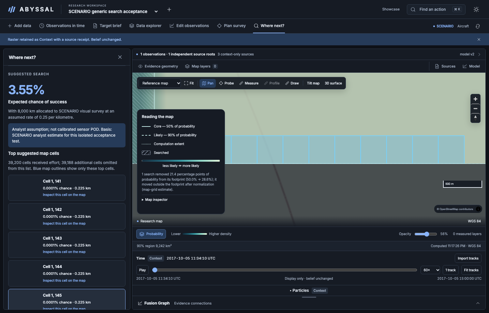
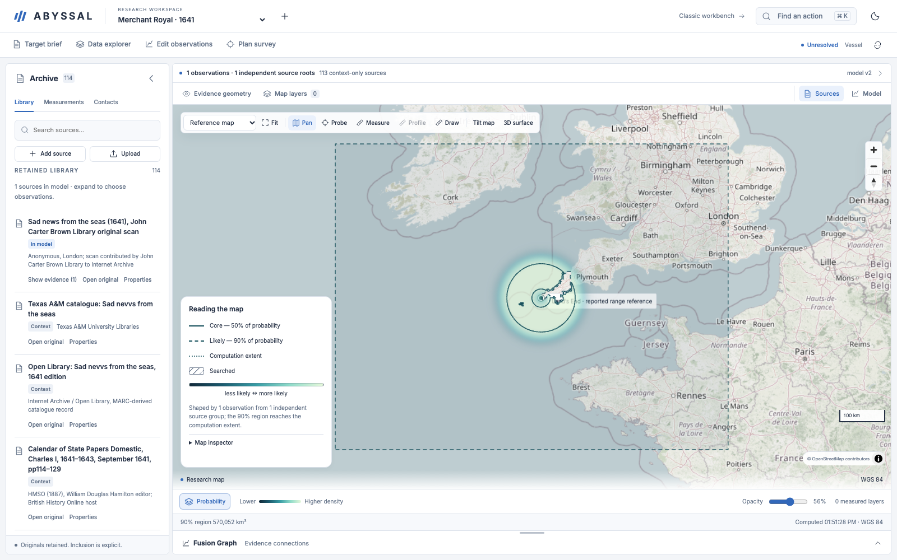

ABYSSAL: Honest Probability Maps for Imperfect Search
Bayesian search theory, human-admitted evidence, and decision support under explicit assumptions.
ABYSSAL is a local-first workbench that keeps an honest probability map of where a lost thing might be, updates it after every search, and shows exactly which evidence moved it and who approved that evidence.
When something is lost—a hiker, an aircraft, a shipwreck, an archaeological site, a rare animal—searchers usually fail in a predictable way: they confuse "we covered 80% of the area" with "we have an 80% chance of having found it". ABYSSAL replaces that with arithmetic. It holds a probability map, lowers the probability of searched ground in proportion to how well the search could actually have found the target, keeps an explicit share for "it was never in this area at all", and records where every input came from and which human accepted it.
Honest status: ABYSSAL runs locally on one laptop, was built in about a month, is covered by ~2,400 automated tests, and has one complete fictional demo plus a handful of historical reference cases. It has not been validated against real search outcomes, and has no external users yet. It provides decision support—never answers, target authentication, or clearance certificates.
Looking for lost keys, scaled up
Suppose you lose your keys in a house. You search the kitchen for five minutes and don't find them. Two questions follow immediately:
- Does that mean they're not in the kitchen? No—you may have looked badly. How much it lowers the chance depends on how thorough you were.
- Does it make other rooms more likely? Yes, a little, because the kitchen got a bit less likely.
Now scale that up to a forest, an ocean, a thousand searchers, or a multi-million-pound survey. The logic is identical, and people routinely get it wrong in three predictable ways:
- The coverage fallacy: Hearing "we covered 80% of the area" as "80% chance we found it". If your method only spots the target 7 times in 10 when it's actually there, covering 80% gives 0.8 × 0.7 = 56% of the in-area probability, not 80%.
- Ignoring what "not found" says about the boundary: If you assumed the target was inside the box you drew, every empty search makes it likelier your box was wrong. Almost nobody updates that number.
- Repeating a method where it fails: Dense canopy, deep silt, or acoustic shadow causes the same sensor to miss the same target for the same reason. Four passes can equal one chance counted four times, not four independent chances.
Interactive: The coverage fallacy & the honest progress bar
Planners are 90% sure the target is inside the drawn area (10% outside). They search 80% of the area with a method that detects the target 70% of the time when it's there, and find nothing. Adjust the sliders below to see where the remaining probability actually sits.
Where does the remaining belief sit after an empty search?
With defaults (90%, 80%, 70%), a fifth of the remaining belief now sits outside the drawn line, and the largest single share (43.55%) sits in ground already "done". These shares are model-relative beliefs, valid only if the declared outside share and POD assumptions hold.
What ABYSSAL does & where it applies
- Holds a belief map over the search area plus an explicit "outside" share.
- Accepts evidence with minimal typing: drop a map point, draw "we searched here", drop a GPX/KML track, or attach a document.
- Nothing changes the map until a person admits it. Importing, downloading, or an algorithm flagging a contact never alters the belief map automatically.
- Lets an analyst draw an area and state a belief ("not here, 5%"), updating the map by the smallest amount that honours the statement and reporting the cost in bits.
- Tracks full provenance: every file has a URL, retrieval time, size, SHA-256 hash, and licence text; every result records model version, code commit, and input hashes.
The same mathematics applies to shipwrecks from conflicting historical reports, aircraft lost at sea, buried archaeological sites, rare or invasive species, lost people on land, and lost drones. Today, only a fictional lost-hiker case is a complete end-to-end demonstration; the others are historical reference cases or planned domain packs.
SCENARIO valley-hiker demo): Retained sources and tracks sit in the left Archive; the centre map renders the 50% core, 90% likely contour, and hatched searched footprints; the right Inspector separates Draft items from In model observations. Nothing enters the map without human admission.Belief, evidence, and human admission
ABYSSAL cuts the search area into a grid of cells. Each cell holds the probability that the target is in it, summing to 1 across the map (with an optional human-declared "outside" share). Colour represents belief, not fact.
- Positive evidence: A sighting, bearing, witness statement, or sonar contact ("it's around here").
- Negative evidence: "We searched there and saw nothing." In real searches, negative evidence is usually the dominant driver of the map.
- Reliability (r): An analyst's confidence parameter between 0 and 1—not a measured accuracy or false-alarm rate. A clue is treated as a mixture: with weight r it is informative; with weight 1 − r it says nothing.
- POD, POA, POS: Probability of Detection (POD) is the chance a search finds the target if it is there. Probability of Area (POA) is the chance it is in that segment. Probability of Success is POS = POA × POD. ABYSSAL separates assumed POD (allowed, flagged) from calibrated POD (measured on held-out labelled data).
- Independence is a claim, not a default: Five reports tracing back to one original pamphlet are one voice, not five.
- Information in bits: One bit is one fair coin flip. ABYSSAL reports how many bits each piece of evidence—or your own drawn assertion—moved the map, alongside entropy (spread of belief) and perplexity (effective number of equally likely places).
Evidence & Provenance Pipeline (Animated)

POD assumption (0-1): 0.6, saves it as a draft, and admits it. The hatched search removes 21.4 percentage points from its footprint (50.0% → 28.6%) and shifts belief onto the unsearched half.How the calculations work
All grid computations run in log space using float64 on the server (browsers receive float32 display grids; the server holds the authoritative posterior SHA-256). Unsupported cells stay at −∞; an impossible observation over all support raises an error with no silent renormalisation. Expand any section below for the exact formulas and worked test vectors.
L3.1 – L3.4 · Grid Bayes, Negative Evidence & Positive Clues (v1 vs v2)
For cells i = 1 … N with normalised prior pi ≥ 0, independent provenance roots multiply while same-root layers are pooled before accumulation so the posterior is exactly invariant to evidence order:
Negative evidence (empty search): A pass with detection d, cell footprint fraction fi, and reliability r has miss likelihood:
Worked example: Two cells with prior (0.5, 0.5). Search cell 1 with d = 0.8, r = 0.75 (miss factor 0.4). After one pass, cell 1 drops to 0.2 / 0.7 = 0.2857. After two independent passes (factor 0.16), cell 1 is 4/29 = 0.1379. After two passes with one shared working state (0.25 + 0.75 × 0.04 = 0.28), cell 1 is 7/32 = 0.2188. Same passes, different failure assumption.
Positive clues (Model v1 vs live Model v2): Legacy v1 used peak-normalised kernels Li = (1 − r) + rKi. Current default v2 normalises against the original prior so the informative part is a proper distribution on supported cells:
In the Merchant Royal reference case (r = 0.75, radius 47.226 km, scale 19.446 km), switching from v1 to v2 moves mass within ±1 scale of the clue from 6.53% to 35.63% and shrinks the 50% credible area from 570,052 km² to 14,713 km².
L3.5 – L3.6 · Provenance Pooling & Repeated Searches (with Interactive Curve)
Provenance pooling: For n enabled children of one shared provenance root, each layer receives exponent 1/n, giving the geometric mean ∏m=1..n Lm1/n. Identical duplicates cannot sharpen the posterior: (Ln)1/n = L.
Live v5/v6 repeat credit: At 8×8 sub-cell resolution, each method-group g interpolates between max-only (ρg = 0, default: an identical pass earns no extra credit) and fully independent (ρg = 1):
Interactive: Repeat credit vs. independent & shared-detectability models
Repeat credit (ρ) is an analyst assumption interpolating between max-only and independent passes. The dashed amber curve shows the separate Uniform-Beta shared-detectability family (for n = 2: 33.3% vs 25.0% independent; for n = 4: 20.0% vs 6.25%).
L3.7 · Region Assertions: "Not here, 5%" (with Interactive 10×10 Grid)
In live v6, an analyst can draw a polygon R holding current conditional mass p = P(R) and assert a target mass q ∈ [10−4, 1 − 10−4]. ABYSSAL applies a minimum-KL (Jeffrey-style) update—scaling supported cells inside R by q/p and outside by (1 − q)/(1 − p). Overlapping assertions are solved jointly by log-space iterative proportional fitting (IPF) after linear-programme feasibility checks (HiGHS).
Interactive: Draw a region & assert target probability
L3.8 · Information Read-outs & Absence Assurance Calculator
ABYSSAL reports entropy H = −∑ pi log2 pi, perplexity 2H, leave-one-out per-item information DKL(full ‖ omitted), and 50/90/99% credible areas. Note that a surprising observation can increase entropy (e.g., prior (0.9, 0.1) with miss-likelihood (0.1, 0.9) yields (0.5, 0.5), raising entropy from 0.469 to 1 bit).
A separate absence-assurance calculator computes how many conditionally independent clean visits k (each with fixed detection p, given prior presence ψ) are needed to reach absence confidence 1 − ε:
Interactive: How many clean visits?
Not a clearance certificate: outputs depend entirely on your assumed prior presence ψ and per-visit detection p.
L3.9 – L3.12 · Moving Targets, Optimal Effort, Calibration Gate & Experimental v3
Land movement (live v4, opt-in): Builds a lognormal walking prior over 8-neighbour Dijkstra least-cost distance on elevation/terrain, mixed with the area prior as Pv4 = (1 − r)Parea + r·Pwalk.
Honest refusal — MH370 flight-path SMC lab: Seven satellite timing measurements (BTO) were used to weight sampled flight paths. Result: no convergence—high ESS concealed that only a handful of original lineages survived, swinging the "south weight" between 0.000 and 1.000 across seeds at 1,000 particles and 0.678 vs 0.629 at 200,000 particles. The module remains a read-only Context prototype and publishes no search prior.
Optimal effort allocation ("water-filling"): Under exponential detection di = 1 − exp(−aiei) and budget B, active cells equalise marginal return μ in O(n log n) time:
This is an optimistic upper bound, not an executable route. A separate research-only marine survey planner compares parallel, expanding-spiral, and adaptive routes using illustrative scenario assumptions.

allocate_exponential ranks and highlights the highest-marginal-return cells while flagging that the rate is an analyst assumption.Calibration gate: A detector can create contacts (Context only); only calibrated detectors with held-out Wilson/Poisson intervals can create admissible observations. Accordingly, AF447 negative-search admission was a recorded NO-GO because reviewed sources lacked measured spatial POD and held-out calibration.
Experimental v3 engine Experimental · Not Live: A full generative model with nuisance-parameter integration (adaptive quadrature, MCMC, tempered SMC), posterior trust, conflict checks, Bayesian model averaging, and simulation-based calibration (SBC) exists in the codebase, but is not wired into the live app.
Architecture, invariants, and verification
ABYSSAL runs locally (Python 3.12+ FastAPI backend with per-project SQLite under .abyssal/projects/; React + TypeScript + MapLibre GL + deck.gl frontend). Outbound requests pass through a single host-allowlist guard; an optional, per-case "archive intelligence" route is off by default, displays an explicit consent notice listing every transmitted field, and writes Context only.
The ten invariants (rules the code may not break)
SCENARIO and never enters a real case.model_version, code commit, and input hashes.Model version history
| Version | Date | Semantics & status |
|---|---|---|
| v1 | Oct 2026 | Peak-normalised contamination; frozen golden posterior hashes. |
| v2 | 28 Oct | Normalised against the original prior; live default. |
| v3 | Nov | Generative densities, nuisance integration, shared detectability, SBC. Experimental |
| v4 | 6 Nov | Opt-in land walking prior (lognormal least-cost distance). |
| v5 | 13 Nov | Grouped quick-search survival at 8×8 sub-cell resolution with repeat credit; Search Ledger. |
| v6 | 16 Nov | Human-stated area-mass assertions (min-KL, IPF) over a v2/v4/v5 base. |
| — | 17 Nov | Correction: External adversarial audit caught v5 silently applying v1 contamination to non-quick positive observations after a quick search; fixed with regression tests. |
Verification & scale: As of commit 90ccba5 (540 commits since 20 Oct 2026), the repository comprises ~37,900 lines of Python, ~33,100 lines of Python tests, and ~35,250 lines of TypeScript/React. An 18-step exact-head local verifier passed 2,387 Python tests, 60 classic JS tests, 249 frontend unit tests, and 107 browser journeys. On an Apple Silicon Mac (300×300 grid), Search Information latency was cut from 4.33 s to 0.594 s with identical posterior hashes (reported in PR measurements; real-GPU zoom smoothness remains unproven).
Inside the Python engine
- Strict support & partial coverage (
abyssal/core/inference.py):contamination_log_likelihoodvalidates that incoming priors are finite, nonnegative, and already normalised withinrtol=1e-12, atol=1e-14—never silently rescaling a broken prior. Undermodel_version == 2, it computeslog_mean = logsumexp(log_prior + kernel[support]) - logsumexp(log_prior)strictly over measured, positive-prior cells, and forces unmeasured cells to0.0in log space so missing data never acquires a spurious multiplier. - Overflow-safe water-filling (
abyssal/plan/allocation.py):_waterfillaccumulates inverse detection rates withnp.logaddexp.accumulate(-log_rates)and sums effort usingmath.fsum, stepping back if logarithmic rounding would overshoot the budget. For tiny exposures (log_exposure < -36),allocate_exponentialuseslog(1 - exp(-x)) ≈ log(x)directly in log space and returns frozen read-only arrays paired with aComputationProvenancehash of inputs and commit. - Origin-enforced calibration (
abyssal/detect/calibration.py): EveryLabelledSamplerequires an explicitDataOrigin(REALorSCENARIO) and raises immediately if an injected target attempts to pass asREAL. POD and per-unit false-positive rates use Wilson score intervals, while false alarms per km² use Poisson (chi-square) count intervals rather than mislabelled binomial bounds.
Where it fits—and where it stands today
| Domain | Status today |
|---|---|
| Lost person (land) | Implemented Complete fictional SCENARIO demo ("valley hiker", real elevation tile, illustrative POD 0.35). |
| Shipwreck (historical reports) | Reference case Merchant Royal (114 retained source records, EMODnet seabed grid); packaged pack Planned. |
| Aircraft lost at sea | Reference cases MH370 & AF447 with explicit refusals on non-convergent SMC and uncalibrated POD. |
| Rare / invasive species | Calculator only Absence-assurance calculator implemented; habitat pack Planned. |
| Archaeology & lost drones | Planned Specs drafted; not yet built. |

Context), while the single admitted 1641 pamphlet range claim shapes the 50% and 90% contours off Land's End. Posterior output is not a validated probability of discovery.Planned: The seven Search Health traps
Next on the roadmap—Evidence Map → Search Health → Case Story → Autopsy—are seven deterministic, explainable alarms that never hide a number or block a decision:
| # | Trap | Illustrative alarm |
|---|---|---|
| T1 | Coverage fallacy | Honest progress bar (already live for eligible cases). |
| T2 | Streetlight effect | "70% of effort has gone into ground holding 15% of the probability." |
| T3 | Cleared-ground complacency | "Sector 2 was 82% clear at 11:00; a moving subject has made it 54% clear now." |
| T4 | Single-story anchoring | "92% of the weight rests on one story, which rests on one sighting." |
| T5 | Fragile clue | "Remove sighting S4 and the top sector changes." |
| T6 | Repeating a failing method | "A third dog pass adds 0.4 points; a thermal drone here would add 3.1." |
| T7 | Sunk-cost continuation | "Tomorrow buys 1.1 points for the same cost; your threshold is 2." |
What this does not do
- No real-world validation; no external users. A stop rule applies: if fewer than 5 outside practitioners across 2+ fields use it on a real or replayed case by ~21 January 2027, feature work stops and the engine is released open source with a written method.
- Detection probabilities are analyst assumptions, not measured; reliability is a confidence parameter, not a calibrated probability.
- Multiple belief semantics coexist across the live grid, experimental v3,
closed_loop, andoccupancyand are not interchangeable. - The live grid is conditional on the drawn domain; the outside share is a human declaration, and the ledger bar is withheld when combined with fitted assertions or imported searches.
- Grid approximations apply: uniform density within cells, 8×8 sub-cell sampling for footprints, cell-centre polygon checks, and regional tangent-plane transforms in legacy modules.
- v2 multiplies contamination factors normalised against the original prior—a documented approximation when observations are correlated under that prior.
- The planner is an optimistic bound with scenario cost inputs, not an operational route.
- Experimental samplers have known failure modes (prior-proposal Metropolis and global-covariance SMC can freeze on concentrated or multimodal targets).
- Real-GPU zoom performance is unproven, and basemaps require internet access (all evidence and inference stay local).
- Single owner-architect directing AI coding agents under written invariants; broader than finished.